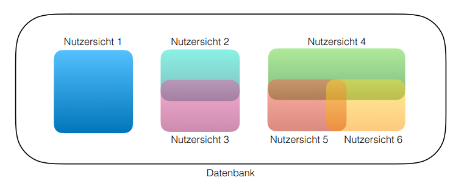

Information Systems
The task of information systems is to save, manage, organize, distribute and steer informations in an organization. The components of such information system are the DB, DBMS, Application Software, Hardware, Developers and Users.
Databases historically developed out of the needs of operational information systems. That's why we look at the database development lifecycle with the usual requirements of information systems in mind. For smaller DBS and databases for the management of smaller data sets e.g in web development some of the steps can be simplified and/or aggregated(zusammengefasst).
DBS Development Lifecycle
- consists of planning and realisation
Planning
Goal Description and System Defintion
- What is the purpose of the DBS?
- Which goals should be accomplished by using the DBS?
- Description of individual user viewpoints (application categories)
- Which (aspects of) data play a role for the user?
- What does a user do with "his" data?
- Where do needs overlap with other user(roles)?
- 
- Creation of rules regarding data collection, data formats, documentation and naming (conventions)
Requirement Specification
- in this process data that should be managed by the DBS is gathered/collected and analyzed
- the specific data and its usage is described for each user view → adequate description (not too much or too less)
- finally the requirements of each view have to be combined
- there're two procedures for this (which can be combined):
-
Central integration
- each user views requirements are combined in an aggregate of requirements for the DBS
-
View integration
- the requirements for each user view stay seperated for the time being
- in the next stept a data model is designed for each user view
- the resulting data models are merged into an uniform data model that represents all user requirements of the database.
Application Design and DB Design*
Realisation
- implementation of DB and application (F.4)
- fill rest in
∗Database Design
F.9